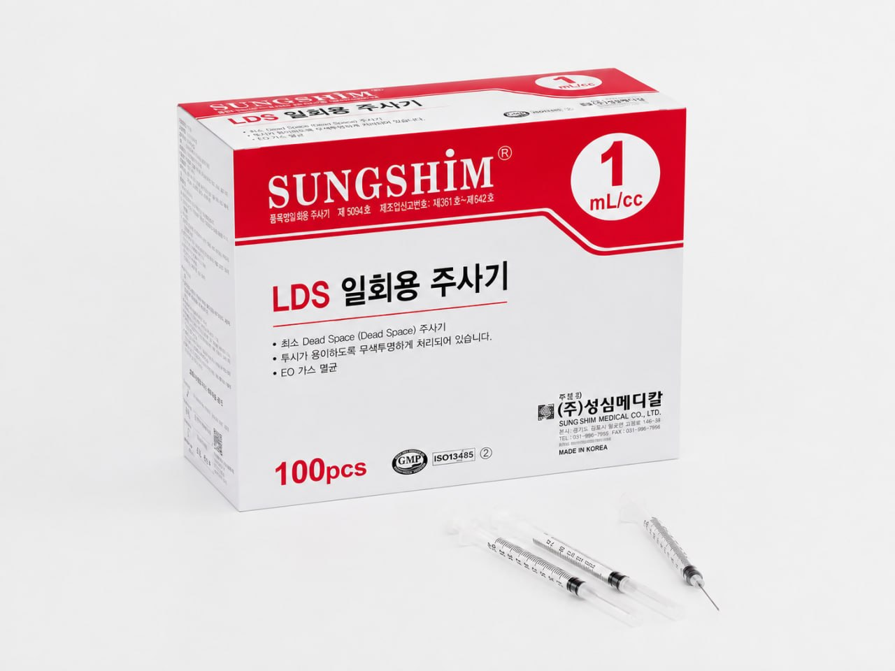

Low Dead Space (LDS) Syringes
Low Dead Space (LDS) syringes are designed to reduce the amount of residual liquid remaining after injection. By minimizing dead space, they help ensure more accurate dosing and improved delivery efficiency.
These syringes are especially beneficial in applications where precise dosage and reduced medication loss are critical.

- Low dead space design for more accurate dosage and minimal medication waste
- Unibody type has a permanently attached needle to further reduce waste
- Non-toxic, non-pyrogenic
- EO gas sterilization
- Nearly pain-free injection with comfort
- Clearly printed graduation lines with bold marking
- Blister package
- Made in Korea
“Dead space” is the medication left inside the hub after the plunger has been pushed all the way down. It is drawn up, paid for, and then thrown away with the syringe. Switch between the two designs below.
↔ Swipe the diagram to see it in full
Modelled on a 0.5 mL dose. The standard hub residual of approximately 0.07 mL is a widely cited figure that varies by syringe and technique; it illustrates the principle and is not a Sungshim specification.
Sungshim produces LDS syringes in two designs. The unibody type has a permanently attached needle, which removes the hub cavity entirely and minimises residual medication. The normal type is a luer slip syringe with a low dead space plunger, offered across a wider gauge range.
| Design | Capacity | Tip Type | Needle Size | Inner Box | Carton Box |
|---|---|---|---|---|---|
| Unibody (fixed needle) | 1 mL/cc | Fixed needle | 23G x 25 mm (1") | 100 pcs | 3,600 pcs |
| 1 mL/cc | Fixed needle | 25G x 25 mm (1") | 100 pcs | 3,600 pcs | |
| Normal type | 1 mL/cc | Luer Slip | 23G – 30G | 100 pcs | 3,600 pcs |
Syringes with and without needles are available on the normal type. For other sizes, please contact us.
-
Preparation
- Inspect the packaging for any damage, missing parts, or expired products before use.
- Ensure the user fully understands the purpose, instructions, and safety precautions prior to use.
-
Usage Procedure
- Wash hands thoroughly before handling the syringe and open the packaging.
- Remove the protective cap and carefully pull off the needle cap without damaging the needle.
- Prepare the medication and draw the required dose carefully while keeping the syringe upright.
- Remove any air bubbles by gently tapping the syringe and adjusting the plunger to maintain dosing accuracy.
- Clean the injection site with an alcohol swab and allow it to dry completely.
- Administer the injection according to clinical guidance and confirm the full dose has been delivered.
- After injection, remove the needle and gently press the site with a swab; do not rub.
- This product is intended for single use only, do not reuse.
- Dispose of used syringes in a sealed, puncture-resistant container and follow proper disposal regulations.
Warnings
- Improper handling or incorrect dosing may result in medication loss or incomplete delivery.
- Users must fully understand proper usage and precautions before use.
Precautions
- Use only for its intended purpose.
- Do not use if packaging is damaged or contaminated.
- Do not use if the needle is bent or damaged.
- Open immediately before use; do not pre-fill for extended storage.
- Ensure air bubbles are removed before injection for accurate low dead space performance.
- Use the correct syringe and needle size according to the required clinical application.
- This is a single-use sterile product; reuse is strictly prohibited.
This product is designed for injections where reduced residual medication, minimized waste, and improved dosing accuracy are required.
- Shelf Life: 5 years from the date of manufacture
- Packaging: Individual sterile packaging for safe single-use handling
- Storage Conditions: Store at room temperature; avoid exposure to direct sunlight, heat, and humidity
Note: This is a medical device. Please read all instructions and safety guidelines carefully before use.